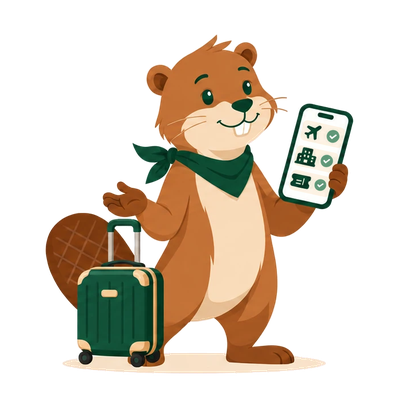
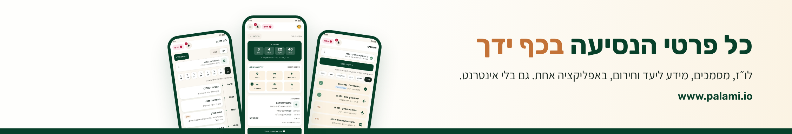
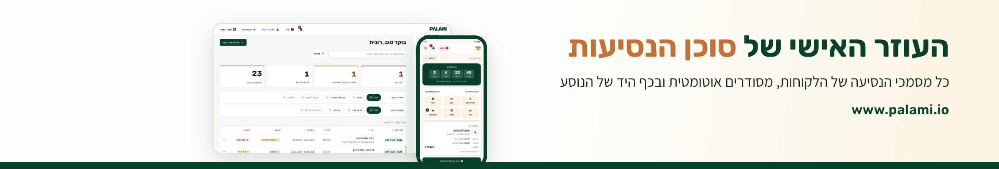
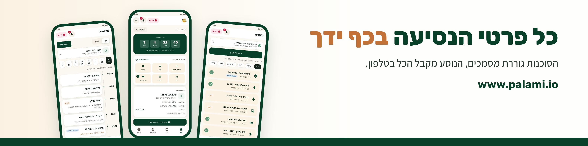
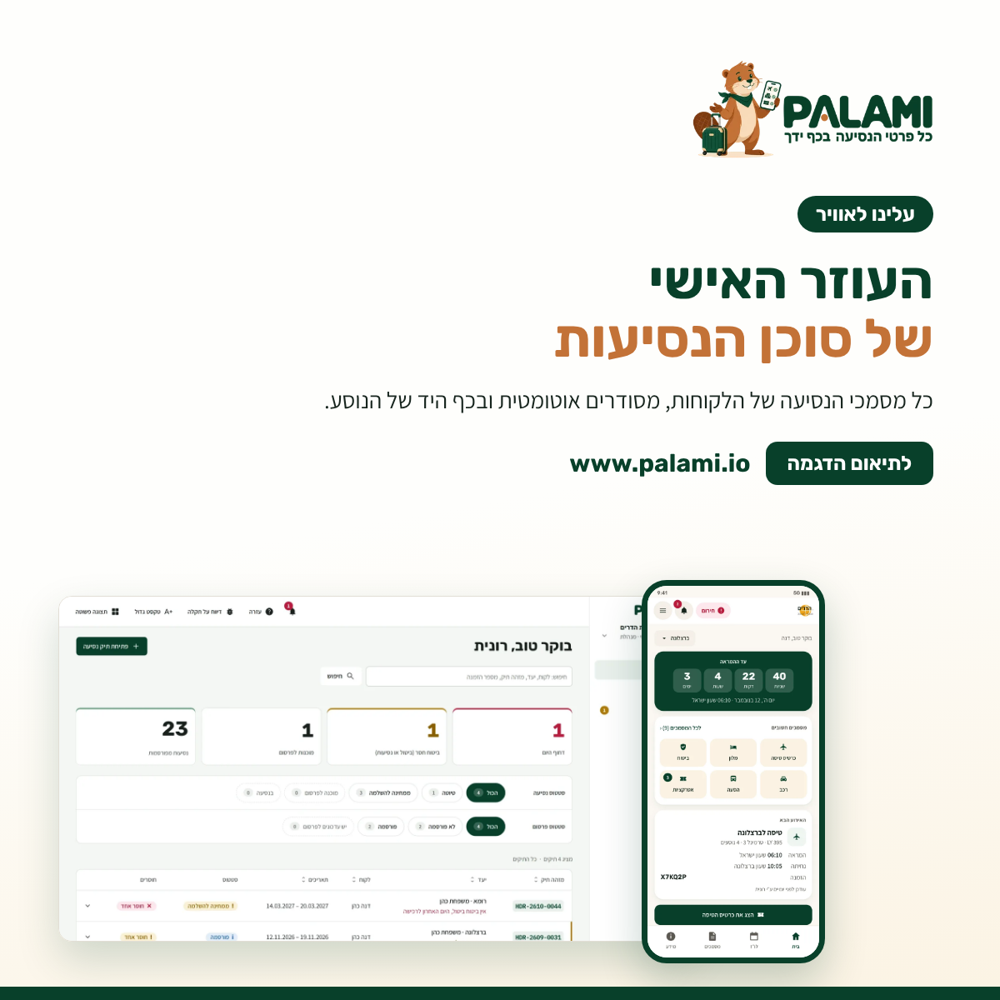
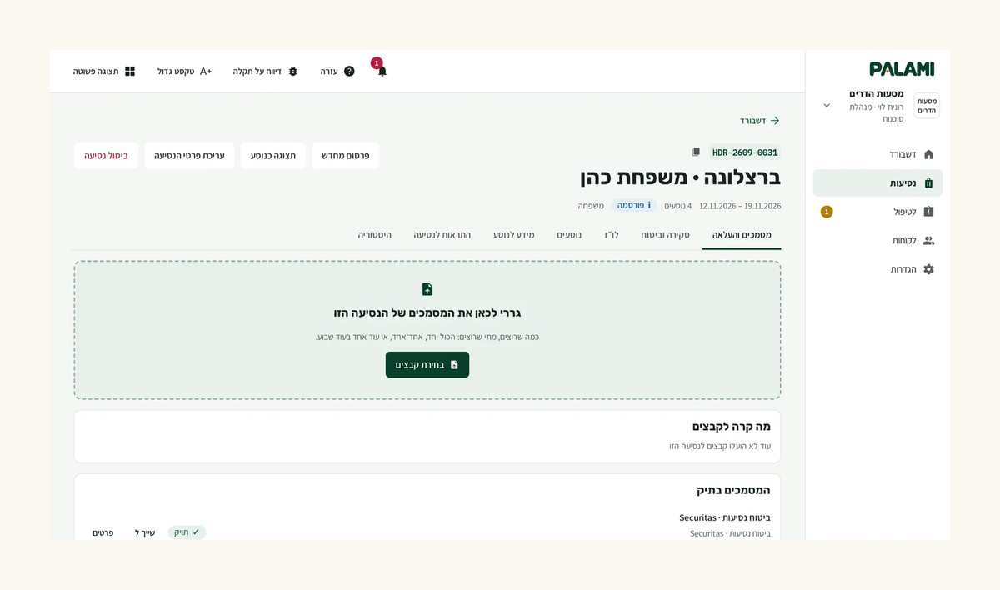
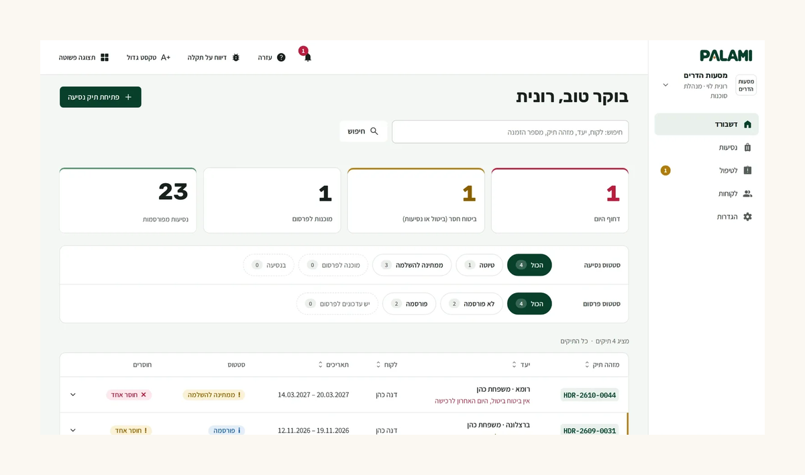
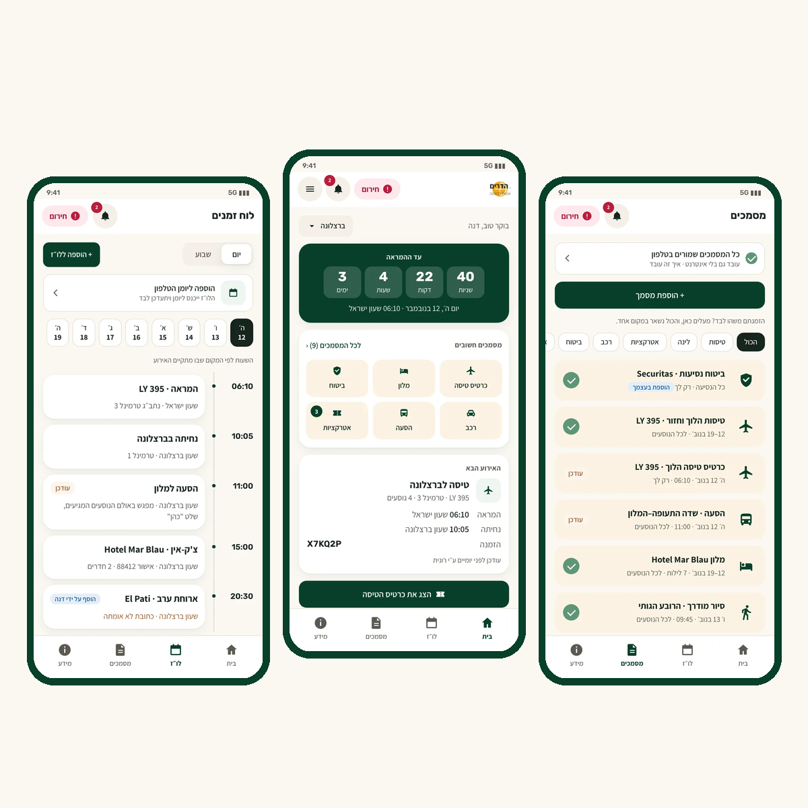
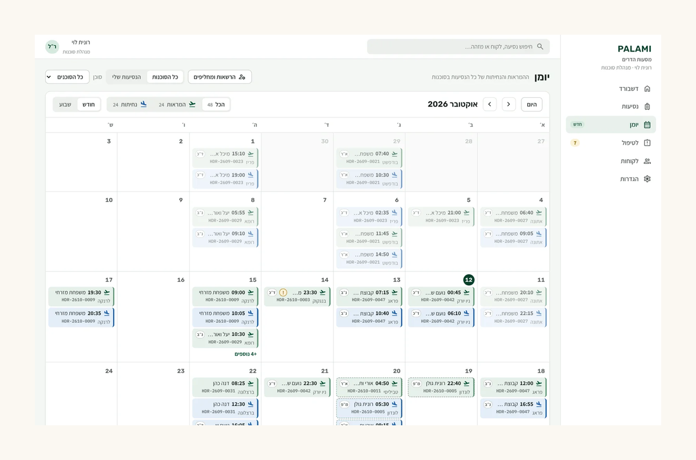

כל מה שצריך לעמוד החברה, לפרופיל האישי ולחודש הראשון של פוסטים. כל טקסט מוכן להעתקה; לשמירת תמונה בטלפון: לחיצה ארוכה על התמונה.
שתי ההחלטות
עברית או אנגלית?
עברית. אנגלית רק כשכבה שנייה.
הקונים הם בעלי סוכנויות וסוכנים בישראל. פוסט בעברית נקרא אצלם כפנייה אישית; פוסט באנגלית נקרא כמו חברה מחו״ל.
עמוד החברה: ה־About בעברית ומתחתיו פסקה קצרה באנגלית. זה משרת את AWS Activate, משקיעים ושותפים בלי לוותר על השוק המקומי.
פוסטים: בעברית. פוסט באנגלית רק לאבני דרך שמעניינות קהל בינלאומי (קבלה ל־AWS Activate, גיוס, שותפות).
הפרופיל האישי: כותרת ו־About בעברית; אפשר להוסיף פרופיל משני באנגלית (הוספת שפה בפרופיל).
"העוזר האישי של סוכן הנסיעות" או מסר כללי?
שתי שכבות: מותג כללי, מסר ממוקד בסוכנים.
השכבה הקבועה (שם, לוגו, סלוגן "כל פרטי הנסיעה בכף ידך", תמונת הכיסוי עם הטלפונים): ניטרלית. מתאימה לסוכנויות היום ולנוסעים פרטיים מחר, ולא צריך לגעת בה כשנפתח לכולם.
השכבה המשתנה (Tagline, הפסקה הראשונה ב־About ופוסטים): מדברת לסוכנים, כי הם הקונים עכשיו. מסר ממוקד מוכר יותר ממסר כללי, ובלינקדאין הקהל שלנו הוא בדיוק הסוכנים.
כשנפתח לכולם מחליפים Tagline ושורה ב־About בחמש דקות. הפוסטים הישנים נשארים נכונים, כי הם מתארים מה הסוכנות מקבלת.
מה לא לכתוב כבר עכשיו: "רק לסוכנויות", "בלעדי לסוכנים" או "הטבה בחינם לנוסעים". אלה הניסוחים היחידים שיסתרו הצעה לנוסעים פרטיים בהמשך.
הנקודה הרגישה באמת היא לא לינקדאין אלא אמון הסוכנים: סוכן ישאל אם PALAMI תעקוף אותו מול הלקוח. לכן כבר עכשיו חוזרים על "במיתוג של הסוכנות שלכם" ו"הקשר נשאר בין הסוכן ללקוח". כשתיפתח גרסה לנוסעים פרטיים, היא תוצג כ"לנוסעים שמזמינים לבד".
עמוד החברה
הקמה, צעד אחר צעד
לינקדאין › For Business › Create a Company Page › Company.
למלא את השדות מהטבלה למטה ולהעלות את הלוגו.
Edit page › Header: להעלות את תמונת הכיסוי.
Edit page › Overview: להדביק את ה־About (עברית ואחריה אנגלית).
Edit page › Buttons: כפתור Visit website עם הקישור עם התיוג (למטה), כדי שפניות מטופס ההדגמה יסומנו כמגיעות מלינקדאין.
בפרופיל האישי: Experience › להוסיף תפקיד ב־PALAMI ולבחור את העמוד, כדי שהלוגו יופיע.
להזמין אנשי קשר לעקוב אחרי העמוד (Invite to follow) ולפרסם את פוסט ההשקה.
העוזר האישי של סוכן הנסיעות. כל מסמכי הנסיעה מסודרים אוטומטית ובכף היד של הנוסע.

לוגו, 400×400. בקובץ -800 יש גרסה כפולה.

✓ מומלץ כיסוי לעמוד החברה, 1128×191. ניטרלי בין סוכנויות לנוסעים פרטיים, לא צריך להחליף כשנפתח לכולם.

חלופה ממוקדת סוכנים (לוח הבקרה ליד הטלפון). מתאימה לחודשים הראשונים אם רוצים שהעמוד יצעק "מערכת לסוכנות".
About בעברית (ראשון)
PALAMI היא העוזר האישי של סוכן הנסיעות.
מסמכי נסיעה מפוזרים בכל מקום: חלק במייל, חלק ב־WhatsApp, חלק אצל הסוכן וחלק אצל כל אחד מבני הזוג. PALAMI נולדה כדי לעשות בזה סדר.
איך זה עובד:
• הסוכן גורר את מסמכי הנסיעה לתיק: אישורי טיסה, שוברים, כרטיסים ופוליסות ביטוח.
• מערכת AI מזהה כל מסמך, מחלצת ממנו את המידע, נותנת לו שם ברור ומכניסה אותו ללו״ז.
• הנוסע מקבל קישור אחד לאפליקציה אישית במיתוג הסוכנות, בלי הורדה: מסמכים, לו״ז, מידע ליעד, חירום וצ'אט ישיר עם הסוכן, גם בלי אינטרנט.
מה הסוכנות מקבלת:
• כל הנסיעות במבט אחד: מה דחוף היום, מה חסר בכל תיק ומה מוכן לפרסום.
• יומן של כל ההמראות והנחיתות ועבודת צוות גם בחופשה.
• תזכורות ועדכונים לנוסעים בזמן שקבעתם ופחות שאלות חוזרות.
• קשר עם הלקוח לפני הנסיעה, במהלכה ואחרי החזרה.
ראש שקט לסוכן. נסיעה מסודרת לנוסע.
לתיאום הדגמה: www.palami.io
פסקה באנגלית (להדביק מתחת לעברית)
PALAMI is the travel agent’s personal assistant. Agents drag trip documents into a trip file; an AI engine recognizes each document, extracts the details, names it and places it in the schedule. The agency sees what’s urgent and what’s missing in every trip, and travelers get one link with every trip detail on their phone, under the agency’s brand, even offline. Built in Israel for Israeli travel agencies. www.palami.io
הגרסה האנגלית המלאה (לשימוש בטפסים, AWS ומשקיעים) נמצאת בקובץ brand/linkedin/about.md.
הפרופיל האישי שלך
בלינקדאין פוסט מפרופיל אישי מגיע להרבה יותר אנשים מפוסט של עמוד חברה. העמוד הוא כרטיס הביקור; הפרופיל שלך הוא מה שיביא את הסוכנים.

✓ חדש כיסוי לפרופיל האישי, 1584×396. הטקסט בחלק העליון כדי שתמונת הפרופיל לא תסתיר אותו.
כותרת (Headline)
Founder, PALAMI | העוזר האישי של סוכן הנסיעות | כל מסמכי הנסיעה מסודרים אוטומטית ובכף היד של הנוסע
About אישי
הקמתי את PALAMI כדי לעשות סדר במסמכי הנסיעה.
היום המסמכים של כל נסיעה מפוזרים: חלק במייל, חלק ב־WhatsApp, חלק אצל הסוכן וחלק אצל הנוסעים. הסוכן מחפש, מקליד ועונה שוב ושוב על אותן שאלות והנוסע מחפש את השובר הנכון ברגע הכי פחות נוח.
ב־PALAMI הסוכן רק גורר את המסמכים לתיק. מערכת AI מזהה כל מסמך, מתייקת אותו ומכניסה אותו ללו״ז והסוכנות רואה בכל רגע מה דחוף ומה חסר בכל תיק. הנוסע מקבל קישור אחד עם כל פרטי הנסיעה, במיתוג של הסוכנות. הקשר נשאר בין הסוכן ללקוח.
סוכנויות שרוצות לראות איך זה עובד אצלן מוזמנות לתאם הדגמה: www.palami.io
עוד בפרופיל
Experience: Founder · PALAMI · מ־2026 (לבחור את עמוד החברה מהרשימה).
Featured: קישור לאתר ופוסט ההשקה.
Open to › Providing services: אפשר לדלג. זה נראה כמו פרילנס ולא כמו מוצר.
הודעה לבעלי סוכנויות (אחרי חיבור)
היי [שם], תודה על החיבור.
אני מ־PALAMI, מערכת שמסדרת לסוכנויות את מסמכי הנסיעה: גוררים את המסמכים לתיק, AI מתייק הכל והנוסע מקבל את כל פרטי הנסיעה בטלפון, במיתוג של הסוכנות.
אם מעניין, אשמח להראות ב־20 דקות איך זה נראה על נסיעה אמיתית שלכם. ואם לא, הכל טוב 🙂
חיבור ראשון בלי הודעת מכירה. את ההודעה שולחים רק אחרי שהחיבור אושר, ולא יותר מתזכורת אחת.
החודש הראשון: שבעה פוסטים
שניים בשבוע זה קצב שאפשר להחזיק. פוסטים אישיים (מהפרופיל שלך) והעמוד משתף אותם; פוסטים על המוצר מהעמוד ומשתפים אותם מהפרופיל עם משפט אישי. בקישורים כדאי להשתמש בכתובת עם התיוג.
שבוע 1השקה · הסיפור
שבוע 2איך זה עובד · סקר
שבוע 3לוח הבקרה · הנוסע
שבוע 4יומן ועבודת צוות
1. עלינו לאוויר
שבוע 1 · מעמוד החברה ומשתפים מהפרופיל

טקסט
עלינו לאוויר! 🚀
בתיירות כולם מכירים את זה: אישור הטיסה במייל, השובר של המלון ב־WhatsApp, פוליסת הביטוח אצל אחד מבני הזוג ושאלות מהנוסעים גם באמצע הלילה.
בנינו את PALAMI, העוזר האישי של סוכן הנסיעות:
✔️ גוררים את מסמכי הנסיעה לתיק ומערכת AI מתייקת אותם לבד
✔️ רואים בכל רגע מה דחוף ומה חסר בכל תיק
✔️ הנוסע מקבל את כל פרטי הנסיעה בטלפון, במיתוג של הסוכנות וגם בלי אינטרנט
ראש שקט לסוכן. נסיעה מסודרת לנוסע.
סוכנויות שרוצות לראות איך זה עובד אצלן מוזמנות לתאם הדגמה: https://www.palami.io/?utm_source=linkedin&utm_medium=social
#תיירות #סוכנינסיעות #TravelTech
2. איך נולדה PALAMI
שבוע 1 · מהפרופיל שלך, בלי תמונה או עם תמונה אישית
טקסט
איך נולדה PALAMI?
בכל נסיעה חזרה אותה תמונה: אישור הטיסה במייל, השובר של המלון ב־WhatsApp, הביטוח אצל אחד מבני הזוג ושאר המסמכים אצל הסוכן.
ובאמצע הנסיעה, כשצריך משהו דחוף, מתחיל החיפוש.
רציתי שכל זה יהיה במקום אחד. גם לסוכן וגם לנוסע.
ככה נולדה PALAMI: הסוכן גורר את המסמכים לתיק, מערכת AI מזהה כל מסמך ומתייקת אותו והנוסע מקבל את כל פרטי הנסיעה בכף היד.
ומה אצלכם בסוכנות: איפה מסמכים "הולכים לאיבוד" הכי הרבה?
! להתאים כדאי להחליף את הפתיחה בסיפור אישי אמיתי: נסיעה מסוימת, רגע מסוים. סיפור אמיתי עובד יותר טוב מכל ניסוח.
3. מה קורה כשגוררים מסמך
שבוע 2 · מעמוד החברה

טקסט
מה קורה כשסוכן גורר מסמך לתיק ב־PALAMI?
1. מערכת AI מזהה מה זה: טיסה, מלון, רכב, ביטוח או כרטיס.
2. הפרטים נשלפים לבד: תאריכים, שעות ומספרי הזמנה. הקובץ מקבל שם ברור.
3. האירוע נכנס ללו״ז של הנסיעה, בשעון של היעד.
ומה אם המערכת לא בטוחה בפרט מסוים? הוא עובר ל"לטיפול" והסוכן מאשר בלחיצה. אם מגיע עדכון לטיסה קיימת, רואים לפני ואחרי ומאשרים.
כל השאר קורה לבד.
תיק מסודר, בלי הקלדה ובלי לחפש קבצים.
https://www.palami.io/?utm_source=linkedin&utm_medium=social
#סוכנינסיעות #תיירות #AI
4. סקר: מה הנוסעים שואלים
שבוע 2 · מהפרופיל שלך, כסקר (Poll) לשבוע
שאלה ותשובות
על מה נוסעים הכי הרבה שואלים את הסוכנות במהלך הנסיעה?
• איפה השובר / המסמך
• מתי להגיע לשדה
• שינויים בטיסה
• משהו אחר (בתגובות)
סקר מביא תגובות מסוכנים, והתגובות הן חומר לפוסטים הבאים ופתח לשיחה אישית.
5. בוקר בסוכנות
שבוע 3 · מעמוד החברה

טקסט
בוקר. נכנסים ל־PALAMI ורואים מיד:
• מה דחוף היום
• באיזה תיק חסר ביטוח או כרטיס
• מה מוכן לפרסום לנוסע
• אילו תיקים כבר פורסמו
בלי לפתוח תיק אחרי תיק ובלי רשימות בצד.
ככה נראה ראש שקט בסוכנות.
https://www.palami.io/?utm_source=linkedin&utm_medium=social
#סוכנינסיעות #תיירות
6. מה הנוסע רואה
שבוע 3 · מעמוד החברה

טקסט
מה הנוסע שלכם רואה?
קישור אחד, בלי להוריד אפליקציה. בפנים:
• לו״ז של כל הנסיעה, בשעון של היעד
• כל המסמכים במקום אחד, גם בלי אינטרנט
• מידע ליעד וכפתור חירום
• צ'אט ישיר עם הסוכן
והכל במיתוג של הסוכנות שלכם. הלקוח זוכר מי סידר לו את הנסיעה.
כל פרטי הנסיעה בכף ידך.
https://www.palami.io/?utm_source=linkedin&utm_medium=social
! זמינות האפליקציה לנוסע עדיין בפיתוח. לא לכתוב תאריך זמינות ולא "זמין עכשיו להורדה".
7. עבודת צוות, גם בחופשה
שבוע 4 · מעמוד החברה

טקסט
סוכן יוצא לחופשה. מה קורה עם הנוסעים שלו?
ב־PALAMI מעבירים תיקים לסוכן אחר לתקופה מוגדרת: החלפה מלאה (כולל ההתראות) או שיתוף מידע לצפייה בלבד.
יוצאים לחופשה ארוכה? תוכנית כיסוי מחלקת את הנסיעות הפעילות בין כמה מחליפים.
וביומן של הסוכנות רואים את כל ההמראות והנחיתות בחודש או בשבוע, עם סינון לפי סוכן.
עבודת צוות, גם בחופשה.
https://www.palami.io/?utm_source=linkedin&utm_medium=social
#סוכנינסיעות #תיירות
כללים לכל פוסט
לא לכתוב: "מערכת לניהול נסיעות" או CRM, דוחות, מספרים שלא נמדדו ("חוסך 5 שעות בשבוע"), תאריך זמינות לאפליקציית הנוסע, "בלעדי לסוכנויות".
לחזור על: "גוררים מסמכים", "במיתוג של הסוכנות", "מה חסר בכל תיק", "ראש שקט לסוכן".
"מסמכים" ולא "הזמנות" או "אישורים". "הכל" בלי ו׳. בלי פסיק לפני ו׳ החיבור.
ניסוח ניטרלי מגדרית ("אפשר", "כדאי", פנייה ל"סוכנות" ולא ל"סוכן").
תמונה בכל פוסט מוצר; עד שלושה האשטגים; הקישור בגוף הפוסט.
מגיבים לכל תגובה בשעה הראשונה. זה מה שמגדיל את החשיפה.